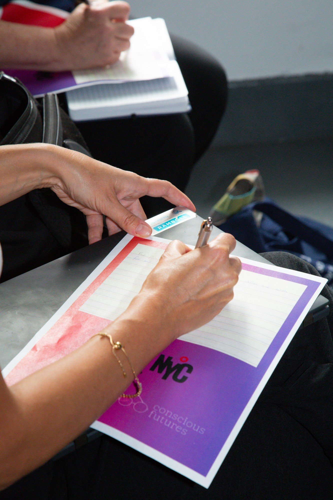
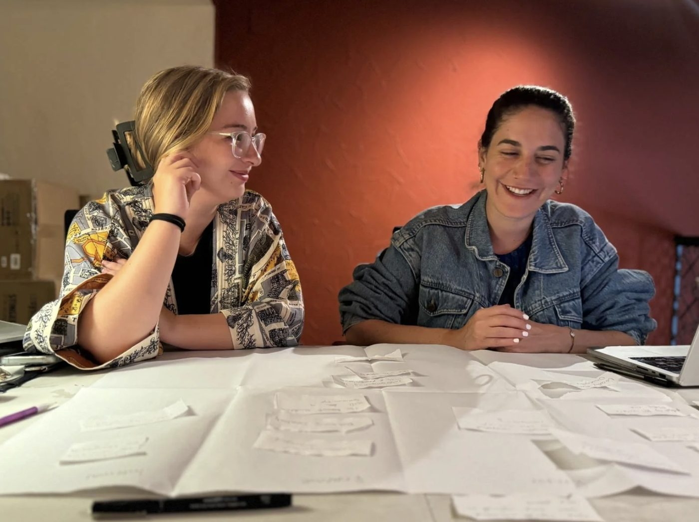

The future needs a reframe.
A research and strategy studio exploring civic and social imagination.
Conscious Futures is a research and strategy studio exploring civic and social imagination: how people picture a shared future, what shapes it, and whether they believe they can help build it. We help civic and nonprofit organizations build that imagination into frameworks, stories, and programs.
Interviews, landscape scans, and survey synthesis on how people actually picture the future, and what's driving that picture.
Frameworks, learning tools, and public resources that turn research into something people can learn from and act on.
Narrative strategy, exhibits, and reports that widen the range of futures people can picture and see themselves in.
Fellowships, curricula, and workshops that turn a room of people into real collective thinking, and give them practice shaping what comes next.
The shape of an engagement follows the question — sometimes a focused sprint, sometimes an ongoing partnership.
How people picture a shared future.
What shapes it.
Whether they believe they can help build it.
A collective writing and open-mic session at New York Climate Week, moving the room from imagination toward shared visioning.
See the speaking engagement
Recent collaborators and partners include New_Public, AARP, New America, Made By Us, Democracy 2076, Georgetown's Red House, the Foundation for Social Connection, CoGenerate, and the National Conference on Citizenship.
Conscious Futures is grounded in Kate Barranco's independent practice, and it's also an evolving space — partnering with organizations, artists, and change agents across disciplines and geographies, always relationally, always with curiosity.
What connects each project isn't the client; it's the practice.

This work is grounded in a specific set of beliefs about what makes change possible — and a broader framework for how we think about imagination, systems, and repair.
Our Lens →